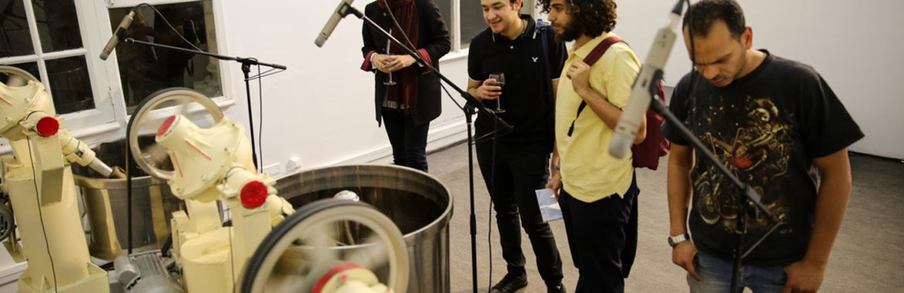
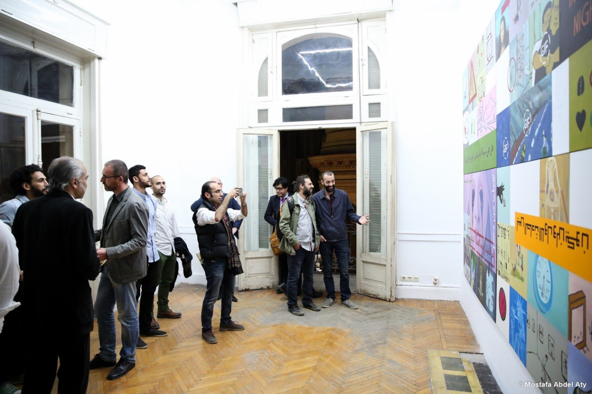
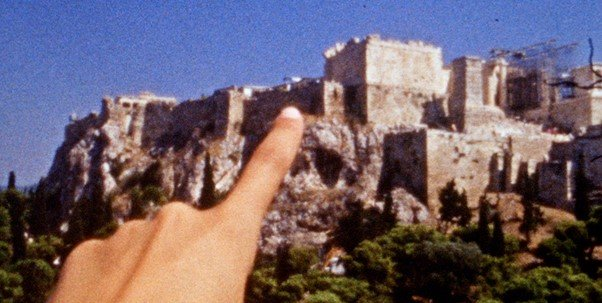

Originally published in Mada Masr on 14 April 2016
By Ismail Fayed

Exhibition view from Sounds As If, D-CAF visual arts program
Spanning three locations, this year's D-CAF visual arts program invites the audience to take in the whole of the downtown Cairo experience.
The press release for the show, titled Sounds As If and curated by Gypsum Gallery director Aleya Hamza, refers to an already heavily re-appropriated musical genius, Pierre Schaeffer (1910-1995) and the genre he pioneered, musique concrète. Musique concrète used pre-recorded sounds, slicing and manipulating their speeds and textures to divorce them from their origins and create new sonic material. Schaeffer's idea was to shift from the musical convention of making abstract concepts (musical notation) concrete to using concrete sounds as direct musical material. This came to shape music – arguably, hip-hop and electronic music would not be what they are without Schaeffer and his collaborator Henry Pierre.
Joe Namy's 28th Color (2013-2015) is at the Kodak Space, which seems to have remained empty since 2014, after being re-purposed by CLUSTER for Hassan Khan's D-CAF exhibition. Freshly painted white walls and glaring spotlights contrast with Namy's medium-sized photos. The series is inspired by Detroit and captures landscapes that range from the urban to the natural and include hybrids of both. In each photo, refracted light creates different patterns of prisms. The resulting prismatic glares act as the first layer of the images, above the backdrop of the various scenes, playing on remembrance and the materiality of memory.
The series evokes the fragility of the image vis-a-vis nature, light and the limits of our perception. The carefully selected scenes together construct a visual narrative that would be immediately relatable were it not for the quotations printed on transparent plastic stickers on the wall next to each framed image. These, taken from texts whose authors range from Susan Sontag to Theodor Adorno via Walter Benjamin, might function also as selected material that ground the images in a particular narrative, yet they feel forced. I found them a distraction, more than a layer giving shape or form to the images. They unnecessarily bring in incredibly complex and intellectually charged ideas that seem to interfere with the visual narrative. I felt the images would do better without them.
Four other artists are exhibiting works in the Old French Consulate, a rather magisterial building with neo-classical facades and impressively sized rooms. Doa Aly's The House of Rumour (2016) and Basma Al Sharif's Deep Sleep (2014) are for me the works that best reflect Schaeffer's idea about de-contextualizing materials to reconstruct new ones.
Aly's four-channel, eight-speaker video can be seen as the pinnacle of her ongoing artistic experimentation with video and sound. It continues her use of complex sonic composition, as in Hysterical Choir of the Frightened (HCF) (2014), of multiple visual narratives, as in The Girl Splendid in Walking (2009) and Tress of Hair (2008), and her general preoccupation with constraints (physical or psychological) on the moving body and with the text of Ovid's Metamorphosis.
The House of Rumour features large projections of a group of women and a group of men walking around an ordinary room in a specific pattern while reciting different texts. Two other projections next to them show a male and a female performer reciting soliloquies. The piece has the effect of the uncanny: through using non-professional performers and dispensing with theatricality, the visuals are both familiar and unsettling. Most memorable, however, is how the sound is layered in a way that makes it partially intelligible and partially unintelligible. The play on the possibilities of understanding through listening and not listening is disturbing as it is hypnotic. Unfortunately, this ambitious piece proved a technical challenge for D-CAF and some visitors have found it switched off.
Outside the huge room containing Aly's video installation is a slender geometrical wooden sculpture that embodies the patterns of movements in the video and epitomizes Aly's work — deceptively simple yet intricately complex.
On a wall opposite are four canvases hung together as one large painting: Amgad's Project (2016) by Ahmed Sabry. It looks like patchwork of screenshots from Facebook GIFs and memes, and is as inscrutable as it is chaotic. Does Sabry want us to relate to his subject matter through his rendering of it into a new materiality, or does he seek, like musique concrète, to create something new out of collecting pre-existing visual fragments? Either way, for me the kitschy, patchy feel of the painting does not give much, technically or conceptually, to the attempt.

Ahmed Sabry, Amgad's Project, 2016, patchwork of Facebook screenshots and memes
Sabry's interest in the comic strip formats, where a series of pictures convey a story, has been evident since his earliest works Apartment BulAaq (2007), as well as his interest in recycling pop culture. But unlike Apartment BulAaq's more tortuous lines, Amgad's Project does not go beyond parodying the mundanely preposterous.
Magdi Mostafa has been using machine sounds as early as 2006 in his work The Dark Wind Blows at the Bibliotheca Alexandrina. His Elements of the Unexpected (2016) was presented first at Art Dubai in 2012, where industrial mixers sifted through date molasses as a commentary on the economy and paradoxical aspects of society and politics in the Gulf.
In its presentation at the Old French Consulate, the industrial mixers are replaced with three mechanical refineries of sugar-cane molasses made out of repurposed military trucks and equipped with microphones within and from without. The carpeted space is permeated by the sweet aroma of molasses and deafening noise. The external mics are connected to speakers emitting a constant deep sound, while the mics attached to the equipment are connected to a soundboard and you can listen to the refineries' internal sounds via headphones.
Elements of the Unexpected is a multi-sensorial installation that has a lot of potential through its olfactory aspect, the physical presence of the machines, and the very particular sonic processes they create. I felt these possibilities could be explored further though, especially perhaps the relationship between the molasses and the repurposed military trucks, and was left wondering if it was a continued exploration of paradoxes in economy and technology.
Next door is Basma Alsharif's video Deep Sleep (2014). Shot with Super-8 film, which sensitively captures the moody atmospherics of the landscapes Alsharif oscillates between, the wordless video can be seen as part of her larger body of work exploring presence and absence, bi-location and moving across space and time. As the exhibition note explains, Alsharif was temporarily unable to travel to Gaza so she created an alternative journey between ancient, fictitious and internal landscapes from all around the Mediterranean, in which her own feet and hands sometimes appear. The fragmentary narrative, powerful soundtrack of ambient field recordings and brooding visuals makes the video seem like a cryptic ruin or perhaps a future document of the past yet to come.

Basma Alsharif, Deep Sleep, 2014, Super-8 film exploring Mediterranean landscapes
The storefront on Mahmoud Bassiouny Street containing Ahmed Badry's work is a good walk away from the Old French Consulate. The renovated shop is painted all white with spotlights installed, and facing the street is Badry's large sculpture of a toilet bowl and an equally enlarged faucet sculpture installed over it. The sculpture is part of the series The Provisionary that Lasts (2014-), in which Badry reconstructs everyday objects in different scales using white-painted cardboard, bringing out the absurd.
The toilet bowl is grotesque and comical. Perhaps it can be seen within the framework of musique concrète, in the sense that the fragmentation and reconstruction of an object creates something new altogether. Yet visually the stark, white, magnified scale held little connection to the rest of the works, and the fact that it was displayed all by itself reinforced the feeling of this being an independent, separate piece from the show.
Hamza's use of modernists' experiments in music as a way to understand composition and to envision new ways of constructing visual narratives and objects is consonant with a long-term global tendency in contemporary art to collapse boundaries between mediums, not in the sense of transdisciplinarity but rather on a more conceptual plane.
The ideas of Schaeffer and later John Cage have been immensely influential for performing arts, specifically contemporary dance. (Schaeffer composed one of his earliest pieces for French choreographer Maurice Bejart). The use of such experiments in visual art opens possibilities for seeing and relating to works in a way that reflects this reality and the artists that engage with it. Not all the works in Sounds As If reflected that possibility to its full potential, but some works displayed a bewitching poetic beauty grounded in intellectual gravitas.
While some of the works or parts of them have been presented before in Cairo or are available online, in light of an increasingly precarious environment for showing art that's not affiliated with the Egyptian state, holding group shows (even if through the context of a gentrifying process of downtown) is much-needed. Situating works physically in relationship to each other and allowing audiences to experience them through a thematic lens creates a very different relationship to art than solo exhibitions or online presentations. The thematic organization of artworks creates the opportunity to trace trends or patterns in artistic processes, question how much global art contexts affect artists in Egypt, and the ways in which they respond given current circumstances.